23 mars17h50
Ça commence aujourd’hui
Témoignage d’un bénéficiaire de l’association
La Cravate Solidaire
Semaine de la fraternité · du 23 au 30 mars avec
Une heure donnée, un voisin aidé, un repas partagé : chaque geste compte, et chacun peut trouver sa manière de s’engager.
830 020 heures de bénévolat promises
248 292 personnes déjà engagées
Vos 12 heures viennent de s’ajouter au compteur de la Fraternité.
Dès le 23 mars, nous vous enverrons à des missions qui correspondent à votre temps.
Voir des missions dès maintenantDes missions qui correspondent à votre temps
En panne d’inspiration ?
Du 23 au 30 mars, les émissions de France Télévisions mettent à l’honneur les associations et les bénévoles.
23 mars17h50
Témoignage d’un bénéficiaire de l’association
La Cravate Solidaire
24 mars15h05
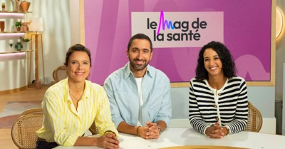
Les bienfaits de l’altruisme sur le corps et l’esprit
25 mars09h30
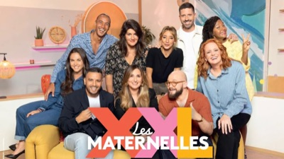
Prendre soin des mamans solos
26 mars11h50
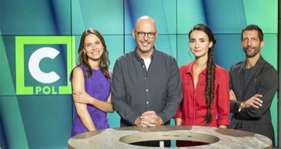
Le monde associatif fait-il le travail de l’État ?
27 mars15h05
Bénévoles à l’hôpital : une présence qui soigne aussi
28 mars09h30
Parents bénévoles : s’engager avec ses enfants
30 mars17h50
Ils ont changé de vie grâce au bénévolat
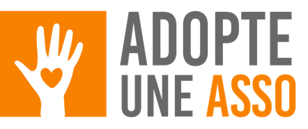
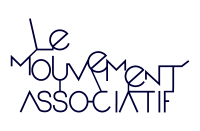
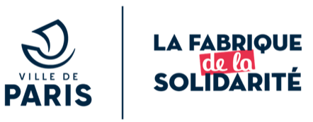
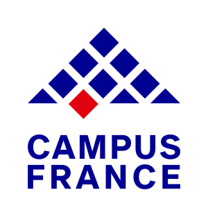
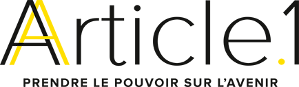
Une heure par semaine, une journée par an : chacun a trouvé sa manière de s’engager.
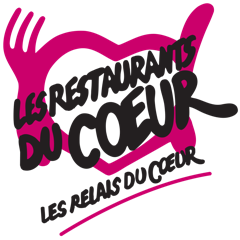
Une expérience très humaine, aux côtés d’autres bénévoles engagés et d’équipes bienveillantes. On se sent vite utile et accueilli. Hâte de revenir distribuer des repas avec les Restos du Cœur !
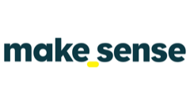
Une aventure collective qui donne du sens, des échanges riches et beaucoup d’énergie. J’ai appris, contribué concrètement et rencontré des personnes inspirantes.
Une expérience formidable avec un super groupe de vacanciers et d’accompagnateurs. On s’est vite sentis comme en famille. Hâte de m’engager à nouveau avec SINGA !
Du 23 au 30 mars, déclarez le nombre d’heures de bénévolat
que vous êtes prêt à donner aux associations
Tous les dons sont précieux, pour une heure ou plus,
vous aiderez beaucoup.
Elle sert uniquement à vous envoyer des missions qui correspondent au temps promis.
Votre promesse s’ajoute au compteur national, aux côtés de celles de milliers d’autres personnes.
Près de chez vous ou à distance, vous choisissez librement celles qui vous conviennent.
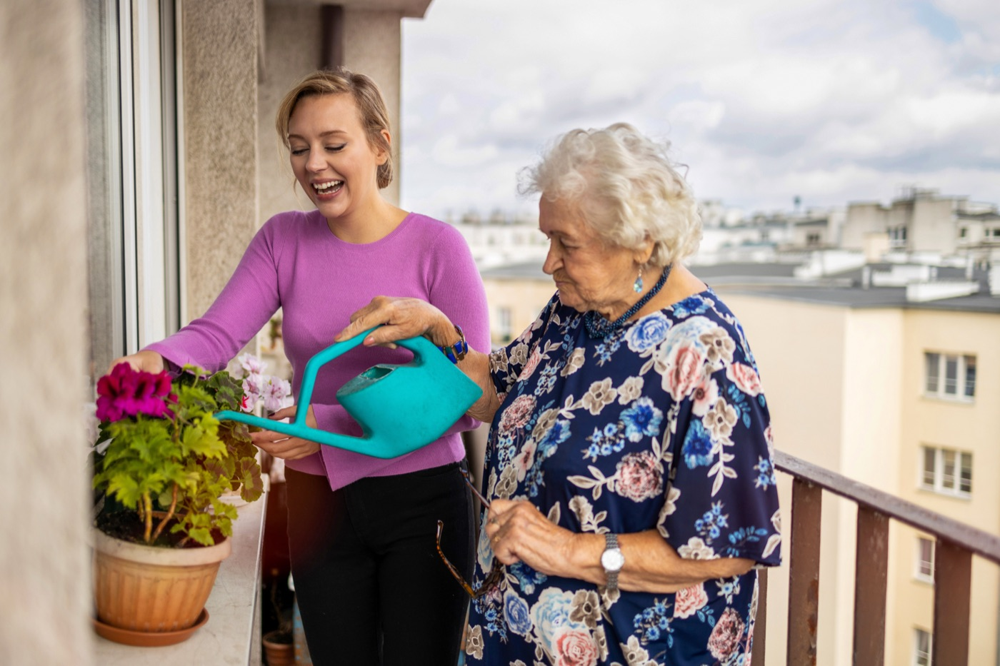
J’aide des personnes âgées
J’aide aux devoirs
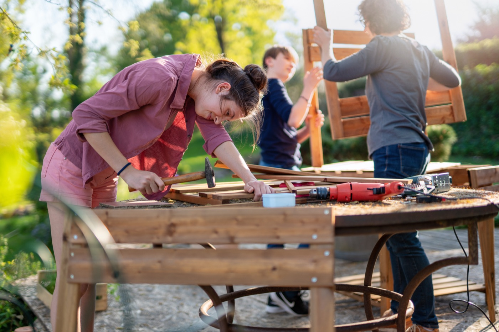
Je rénove des meubles
Du 23 au 30 mars, JeVeuxAider.gouv.fr et France Télévisions invitent chacun à promettre du temps aux associations. Chaque heure promise fait grimper un compteur national.
Non. C’est une intention, pas un contrat : vous choisissez ensuite les missions qui vous conviennent, et vous pouvez changer d’avis à tout moment.
Nous multiplions le temps choisi par sa fréquence, sur six mois : 2 heures une fois par mois comptent par exemple pour 12 heures.
Les missions « Idéale pour débuter » ne demandent aucune expérience : l’association vous accueille et vous explique tout sur place.
Elle sert uniquement à vous envoyer des propositions de missions adaptées. Vous pouvez vous désinscrire à tout moment, en un clic.
830 020 heures de bénévolat promises
248 292 personnes déjà engagées